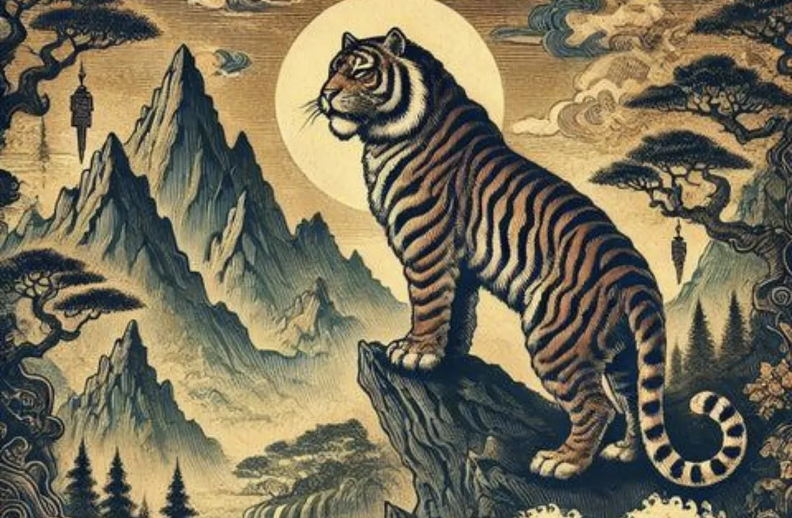

Zodiac Stories & Legends
The Tiger in Chinese Culture: Courage and Strength
Look closely at the stripes on a tiger's forehead. In Chinese tradition, people see a word written there: king.

The king of beasts
Long before the zodiac took its present form, the tiger was the most respected animal in Chinese tradition. Ying Shao, a scholar of the Eastern Han dynasty (25–220 CE), called the tiger "the king of all beasts" and wrote that it could quell war and devour ghosts.
The dark stripes on a tiger's forehead are often drawn to look like the Chinese character for "king" (wang). For many people this marking is the tiger's crown, written on its face.
Guardian of the west
In Chinese astronomy the sky is divided among four great symbols: the Azure Dragon of the east, the Vermilion Bird of the south, the Black Tortoise of the north, and the White Tiger of the west. The White Tiger was honored as the guardian of the west, and it is the only one of the four based on a real animal.
A protector at home
The tiger's strength made it a guardian in everyday life too. Ying Shao wrote that a picture of a tiger on the door would keep ghosts from entering, and tiger pictures are still hung for protection. Children are given tiger-head shoes and tiger-head hats, wishing them health and courage.
Tigers also stood for authority. During the Spring and Autumn and Warring States periods, bronze tiger tallies were split in two: a general would act on an order only when the ruler's half matched his own.
The Tiger in the Great Race
In the folk tale of the Great Race, the Tiger was one of the strongest swimmers, yet it finished third. When the Jade Emperor asked why, the Tiger admitted that the current kept pushing it downstream, and it had to fight its way back again and again. It is a story about effort: the Tiger did not take shortcuts, and it earned its place through sheer strength. The full race is told in The Great Zodiac Race.
What this means for the Tiger sign
Our Year of the Tiger guide describes the sign as brave, confident and competitive, a natural leader who acts decisively, which matches the king of beasts. Traditional readings add a balancing note: Tigers can be impulsive or impatient with people who move more slowly. The river in the race is a good image for that: even the strongest swimmer has to respect the current.
The Tiger in Cambodia
In the Khmer zodiac, the Tiger year is called Khal. It follows the same twelve-animal order and begins at Khmer New Year in April; see Khmer animal years.
Born in the Year of the Tiger? Check your zodiac animal and element and read the full Tiger guide.
Frequently asked questions
Why is the tiger called the king of beasts in China?
Han-dynasty writer Ying Shao called it the king of all beasts, and its forehead stripes are often drawn like the character for "king".
What is the White Tiger?
One of the four symbols of Chinese astronomy, the guardian of the west.
Why do children wear tiger-head shoes?
It is a tradition to wish them protection, health and courage.
Sources and further reading
- The World of Chinese: What Do Tigers Symbolize in China? — Ying Shao on the tiger as king of beasts, the White Tiger of the West, tiger-head shoes and tiger tallies.
- Wikipedia: Chinese zodiac — the Great Race folk tale and its variants, and the link between the animals and the Earthly Branches.
The Great Race and the other tales here are folk tales, told in many versions; they are not historical events. Personality traits are traditional zodiac beliefs, shared for culture and entertainment.
Explore more: The Great Zodiac Race · Year of the Tiger guide · The Horse in the Zodiac · Khmer animal years · All Zodiac Stories & Legends
← Back to Zodiac Stories & Legendsរឿងនិទាន និងរឿងព្រេងរាសីចិន
ខ្លា (ខាល) ក្នុងវប្បធម៌ចិន៖ ភាពក្លាហាន និងកម្លាំង
សូមក្រឡេកមើលឆ្នូតលើថ្ងាសរបស់ខ្លាឲ្យជិតៗ។ តាមប្រពៃណីចិន គេមើលឃើញពាក្យមួយ សរសេរនៅទីនោះ គឺ «ស្ដេច»។
ស្ដេចសត្វ
យូរមុនពេលរាសីចិនមានទម្រង់ដូចសព្វថ្ងៃ ខ្លាគឺជាសត្វដែលគេគោរពជាងគេបំផុត ក្នុងប្រពៃណីចិន។ លោក Ying Shao អ្នកប្រាជ្ញម្នាក់នៃរាជវង្ស Han ខាងកើត (25–220 គ.ស.) បានហៅខ្លាថា «ស្ដេចនៃសត្វទាំងពួង» ហើយបានសរសេរថា វាអាចរម្ងាប់សង្គ្រាម និងស៊ីខ្មោចបាន។
ឆ្នូតខ្មៅលើថ្ងាសរបស់ខ្លា ច្រើនតែត្រូវបានគេគូរ ឲ្យមើលទៅដូចតួអក្សរចិន ដែលមានន័យថា «ស្ដេច» (wang)។ សម្រាប់មនុស្សជាច្រើន ស្នាមសម្គាល់នេះ គឺជាមកុដរបស់ខ្លា ដែលសរសេរនៅលើមុខរបស់វា។
អ្នកការពារទិសខាងលិច
ក្នុងតារាសាស្ត្រចិន មេឃត្រូវបានបែងចែកក្នុងចំណោមនិមិត្តរូបដ៏ធំទាំងបួន៖ នាគខៀវនៃទិសខាងកើត បក្សីក្រហមឆ្អៅនៃទិសខាងត្បូង អណ្ដើកខ្មៅនៃទិសខាងជើង និងខ្លាសនៃទិសខាងលិច។ ខ្លាស ត្រូវបានគេលើកតម្កើងជាអ្នកការពារទិសខាងលិច ហើយវាជានិមិត្តរូបតែមួយគត់ក្នុងចំណោមទាំងបួន ដែលផ្អែកលើសត្វពិតប្រាកដ។
អ្នកការពារនៅក្នុងផ្ទះ
កម្លាំងរបស់ខ្លា ក៏ធ្វើឲ្យវាក្លាយជាអ្នកការពារក្នុងជីវិតប្រចាំថ្ងៃផងដែរ។ លោក Ying Shao បានសរសេរថា រូបខ្លានៅលើទ្វារ អាចការពារមិនឲ្យខ្មោចចូលបាន ហើយរហូតមកដល់សព្វថ្ងៃ គេនៅតែព្យួររូបខ្លា ដើម្បីការពារ។ កុមារត្រូវបានគេឲ្យពាក់ស្បែកជើងក្បាលខ្លា និងមួកក្បាលខ្លា ដើម្បីជូនពរឲ្យពួកគេមានសុខភាពល្អ និងមានភាពក្លាហាន។
ខ្លាក៏ជានិមិត្តរូបនៃអំណាចផងដែរ។ ក្នុងសម័យនិទាឃរដូវ និងសរទរដូវ (Spring and Autumn) និងសម័យរដ្ឋច្បាំងគ្នា (Warring States) ត្រាសំរិទ្ធរាងខ្លា ត្រូវបានគេបំបែកជាពីរកំណាត់៖ មេទ័ពម្នាក់ នឹងអនុវត្តតាមបញ្ជា លុះត្រាតែកំណាត់របស់អ្នកគ្រប់គ្រង ត្រូវគ្នានឹងកំណាត់របស់ខ្លួន។
ខ្លាក្នុងការប្រណាំងដ៏ធំ
ក្នុងរឿងនិទានប្រជាប្រិយអំពីការប្រណាំងដ៏ធំ ខ្លាជាសត្វមួយក្នុងចំណោមសត្វដែលហែលទឹកខ្លាំងជាងគេ ប៉ុន្តែវាបានត្រឹមលំដាប់ទី 3 ប៉ុណ្ណោះ។ ពេលស្ដេចស្ថានសួគ៌ (Jade Emperor) សួរពីមូលហេតុ ខ្លាបានសារភាពថា ចរន្តទឹកចេះតែរុញវាចុះទៅតាមខ្សែទឹក ហើយវាត្រូវតស៊ូហែលត្រឡប់មកវិញ ម្ដងហើយម្ដងទៀត។ នេះជារឿងអំពីការខិតខំ៖ ខ្លាមិនបានរកផ្លូវកាត់ទេ ហើយវាទទួលបានលំដាប់របស់ខ្លួន ដោយសារកម្លាំងសុទ្ធសាធ។ រឿងប្រណាំងទាំងមូល មាននិទានក្នុងអត្ថបទ ការប្រណាំងដ៏ធំនៃរាសីចិន។
អត្ថន័យសម្រាប់អ្នកកើតឆ្នាំខាល
មគ្គុទ្ទេសក៍ឆ្នាំខាលរបស់យើង ពិពណ៌នារាសីនេះថា ក្លាហាន មានទំនុកចិត្ត និងចូលចិត្តប្រកួតប្រជែង ជាអ្នកដឹកនាំពីកំណើត ដែលធ្វើសកម្មភាពយ៉ាងម៉ឺងម៉ាត់ ដែលស័ក្តិសមនឹងស្ដេចសត្វ។ ការបកស្រាយតាមប្រពៃណី បន្ថែមចំណុចមួយ ដើម្បីឲ្យមានតុល្យភាព៖ អ្នកកើតឆ្នាំខាល អាចឆាប់ធ្វើតាមអារម្មណ៍ ឬឆាប់អន្ទះសាជាមួយអ្នកដែលធ្វើអ្វីៗយឺតជាង។ ទន្លេក្នុងការប្រណាំង គឺជារូបភាពដ៏ល្អសម្រាប់ចំណុចនេះ៖ សូម្បីតែអ្នកហែលទឹកខ្លាំងជាងគេ ក៏ត្រូវតែគោរពចរន្តទឹកដែរ។
ខាលនៅកម្ពុជា
ក្នុងរាសីខ្មែរ ឆ្នាំរបស់ខ្លា ហៅថា ឆ្នាំខាល។ វាដើរតាមលំដាប់សត្វទាំងដប់ពីរដូចគ្នា ហើយចាប់ផ្ដើមនៅបុណ្យចូលឆ្នាំខ្មែរ ក្នុងខែមេសា។ សូមអាន ឆ្នាំសត្វខ្មែរ (ស័ក)។
តើអ្នកកើតឆ្នាំខាលឬ? ពិនិត្យសត្វរាសី និងធាតុរបស់អ្នក ហើយអានមគ្គុទ្ទេសក៍ខាលពេញលេញ។
សំណួរដែលគេសួរញឹកញាប់
ហេតុអ្វីបានជានៅប្រទេសចិន គេហៅខ្លាថា ស្ដេចសត្វ?
អ្នកនិពន្ធសម័យរាជវង្ស Han លោក Ying Shao បានហៅវាថា ស្ដេចនៃសត្វទាំងពួង ហើយឆ្នូតលើថ្ងាសរបស់វា ច្រើនតែត្រូវបានគេគូរ ឲ្យដូចតួអក្សរដែលមានន័យថា «ស្ដេច»។
តើខ្លាសជាអ្វី?
ជានិមិត្តរូបមួយក្នុងចំណោមនិមិត្តរូបទាំងបួន នៃតារាសាស្ត្រចិន ដែលជាអ្នកការពារទិសខាងលិច។
ហេតុអ្វីបានជាកុមារពាក់ស្បែកជើងក្បាលខ្លា?
វាជាប្រពៃណីមួយ ដើម្បីជូនពរឲ្យពួកគេមានការការពារ សុខភាពល្អ និងភាពក្លាហាន។
ប្រភព និងឯកសារអានបន្ថែម
- The World of Chinese: What Do Tigers Symbolize in China? — សម្ដីរបស់លោក Ying Shao អំពីខ្លាជាស្ដេចសត្វ ព្រមទាំងខ្លាសនៃទិសខាងលិច ស្បែកជើងក្បាលខ្លា និងត្រាសំរិទ្ធរាងខ្លា។
- Wikipedia: Chinese zodiac — រឿងនិទានប្រជាប្រិយអំពីការប្រណាំងដ៏ធំ និងកំណែផ្សេងៗរបស់វា ព្រមទាំងទំនាក់ទំនងរវាងសត្វរាសី និងមែកផែនដី។
ការប្រណាំងដ៏ធំ (Great Race) និងរឿងផ្សេងៗទៀតនៅទីនេះ ជារឿងនិទានប្រជាប្រិយ ដែលគេនិទានតៗគ្នាច្រើនបែបខុសៗគ្នា មិនមែនជាព្រឹត្តិការណ៍ប្រវត្តិសាស្ត្រទេ។ បុគ្គលិកលក្ខណៈរបស់សត្វរាសីនីមួយៗ ជាជំនឿតាមប្រពៃណី ដែលយើងចែករំលែកសម្រាប់ការស្វែងយល់វប្បធម៌ និងការកម្សាន្ត។
អានបន្ថែម៖ ការប្រណាំងដ៏ធំនៃរាសីចិន · មគ្គុទ្ទេសក៍ឆ្នាំខាល · សេះ (មមី) ក្នុងរាសីចិន · ឆ្នាំសត្វខ្មែរ (ស័ក) · រឿងនិទាន និងរឿងព្រេងរាសីចិនទាំងអស់
← ត្រឡប់ទៅរឿងនិទាន និងរឿងព្រេងរាសីចិន